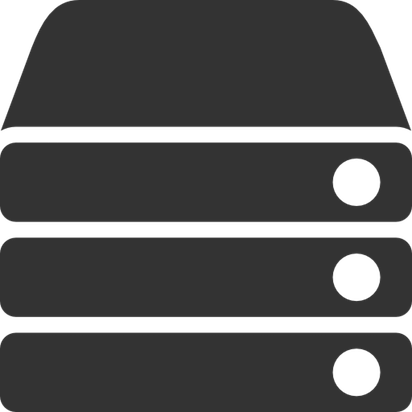
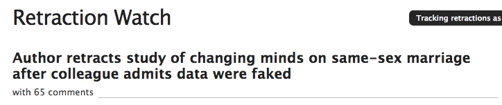
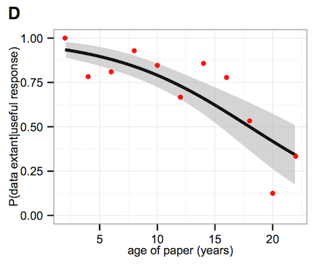
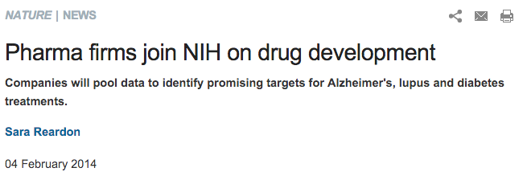
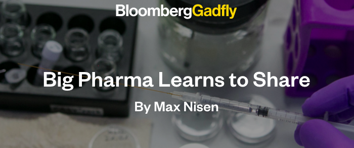
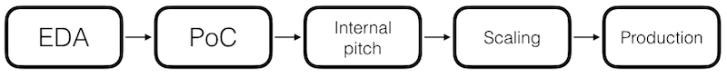

The open science stack
Creating open science workflows

What is open science??

Complete transparency in the scientific process
Open science workflows

(open science workflows Hampton et al 2014)
Why Open Science?
Crisis in public confidence

Why Open Science?
Combat high profile retractions

Why Open Science?
Combat high profile retractions

"The debunkers could do their debunking only because of a bit of luck: Data they needed happened to be available not from its original source, but through another researcher who had posted it to meet a journal’s open-data policies. (fivethirtyeight.com)"
Why Open Science?
Journals care.

Why Open Science?
Journals care.

"the major hurdle to overcome when trying to convince others that we should strive for Open Science: it is a major pain in the ass and is really expensive, in terms of both the money and amount of time required.
We need to stop telling people 'You should' and get better at telling people 'Here’s how' " - Emilio Bruna, UF, editor Biotropica
What is the open science stack?

A stack is a complete group of components that work together to produce a goal.
What is the open science stack?
- Open lab notebooks / sharing
- Open Data
- Open Source / code sharing
- Reproducible writing
- Open Access / pre-prints
Open science stack is all the tools you need to produce open science
What is the open science stack?
Open lab notebooks / sharing- Open Data
- Open Source / code sharing
Reproducible writingOpen Access / pre-prints
Open science stack is all the tools you need to produce open science
Open data
“Open data and content can be freely used, modified, and shared by anyone for any purpose” - Open Knowledge Foundation
Advantages of open data
Your data can be used long after you're gone


(Figure 1D - Vines et al 2014)
Advantages of open data
Increased citation (9%)

(Figure 2 - Piowar and Vision 2013)
Have a plan for your data

(dataone.org)
TL;DR rules for sharing open data
- Use an open format
- Use a metadata standards
- Use an open license
- Use an open repository
Open data formats
What makes a format open?
- ASCII based
- Binary but maintained by an open consortium
- Machine independent
- Machine readable (should be)
Data format examples
Open
- FASTA / EMBL / Genbank
- NeXML / NEXUS
- GeoJSON / KML
- CSV
- NetCDF/HDF5
Closed
- Excel
- Any proprietary DB
- Oracle
- Access
- ESRI shape file

- Know your discipline specific standard
- Know your funding agency policy
- Know your journal's policy
- Know your repository's policy
Some metadata standards
- EML - Ecology
- Darwin Core - Biodiversity data
- CF - Climate data
- ISO 19115 - GIS data
- MIMS / MIMARK - Genomic / Metagenomic data
License please!

"To anyone who wants to photocopy, bind, and give a copy of the book to their loved one — more power to them. He/She will likely be disappointed that you’re so cheap, though." - Randall Munroe (xkcd)
License please!
Your most open choice, public domain!

Choose a Creative Commons license that fits your comfort level
No license does not mean your data is open!
Data repositories
Ideally:
- Persistent with fail safes
- Require metadata
- Allow versioning
- Issue a DOI for citability
- Be open (with an API)!
Data repositories
Some suggestions
- General purpose - Figshare / Zenodo
- Biodiversity - GBIF / KNB
- Nucleic acid sequences - Genbank / EMBL
For more suggestions:
Open source / code sharing

Advantages of open source
- Facilitates reproducibility
- Enables collaboration
- Incentivises writing clean code (future you thanks you)
- More people will use what you build
Sharing code
- Use version control! (git /
svn) - Write human readable comments
- Use a license (MIT / GPL / BSD)
- Share on a public repository (GitHub / Bitbucket)
- Use an open source platform (e.g. NOT matlab, mathematica)
- Distribute it (CRAN / pipy)
- Archive releases and assign DOI's
http://guides.github.com/activities/citable-code/
Sharing code and data

Wolkovich et al. 2012
Open Science, Reproducibility, and Industry
Open standards facilitate government and industry sharing

Open Science, Reproducibility, and Industry
Open standards facilitate government and industry sharing

Open Science, Reproducibility, and Industry
Open standards facilitate government and industry sharing

Relies on Clinical Data Interchange Standards Consortium (CDISC) Study Data Tabulation Model (SDTM) format
Open Science, Reproducibility, and Industry
Sharing happens between companies

Sharing between AstraZeneca and Sanofi
Open Science, Reproducibility, and Industry
Sharing happens between companies

Sharing between 23AndMe and Pfizer and 23AndMe and Genentech
Open Science, Reproducibility, and Industry

"Although the issue of irreproducible data has been discussed between scientists for decades, it has recently received greater attention as the costs of drug development have increased along with the number of late-stage clinical-trial failures and the demand for more effective therapies." (doi:10.1038/483531a)
Open Science, Reproducibility, and Industry
Data science project workflow

"It is possible to achieve some measure of traditional success while being open. Grants; publications; tenure. 'nuff said." - C. Titus Brown, UC Davis
http://bit.ly/ossohsu
@emhrt_